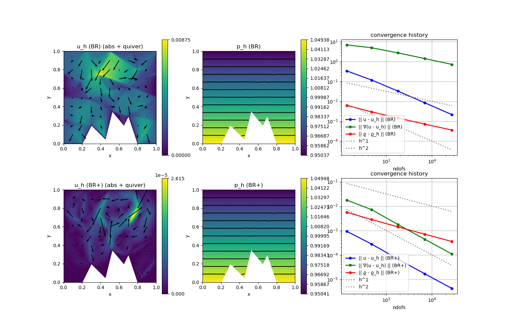

240 : Compressible Stokes 2D
This example solves the compressible Stokes equations where one seeks a (vector-valued) velocity $\mathbf{u}$, a density $\varrho$ and a pressure $p$ such that
\[\begin{aligned} - \mu \Delta \mathbf{u} + \lambda \nabla(\mathrm{div}(\mathbf{u})) + \nabla p & = \mathbf{f} + \varrho \mathbf{g}\\ \mathrm{div}(\varrho \mathbf{u}) & = 0\\ p & = eos(\varrho)\\ \int_\Omega \varrho \, dx & = M\\ \varrho & \geq 0. \end{aligned}\]
Here eos $eos$ is some equation of state function that describes the dependence of the pressure on the density (and further physical quantities like temperature in a more general setting). Moreover, $\mu$ and $\lambda$ are Lame parameters and $\mathbf{f}$ and $\mathbf{g}$ are given right-hand side data.
In this example we solve a analytical toy problem with the prescribed solution
\[\begin{aligned} \mathbf{u}(\mathbf{x}) & =0\\ \varrho(\mathbf{x}) & = 1 - (x_2 - 0.5)/c\\ p &= eos(\varrho) := c \varrho^\gamma \end{aligned}\]
such that $\mathbf{f} = 0$ and $\mathbf{g}$ nonzero to match the prescribed solution.
This example is designed to study the well-balanced property of a discretisation. The gradient-robust discretisation approximates the well-balanced state much better, i.e. has a much smaller L2 velocity error. For larger c the problem gets more incompressible which reduces the error further as then the right-hand side is a perfect gradient also when evaluated with the (now closer to a constant) discrete density. See reference below for more details.
"A gradient-robust well-balanced scheme for the compressible isothermal Stokes problem",
M. Akbas, T. Gallouet, A. Gassmann, A. Linke and C. Merdon,
Computer Methods in Applied Mechanics and Engineering 367 (2020),
>Journal-Link< >Preprint-Link<
module Example240_CompressibleStokes2D
using GradientRobustMultiPhysics
using ExtendableGrids
using GridVisualize
# parameters
const c = 10
const γ = 1
const μ = 1e-3
const λ = -2/3*μ
# the equation of state
const equation_of_state = DataFunction((p, ϱ) -> p[1] = c.*ϱ[1].^γ, [1,1])
# data for exact solution u = 0 and ϱ = ϱ
const ϱ = DataFunction((result,x) -> (result[1] = (1.0 - (x[2] - 0.5)/c)), [1,2]; name = "ϱ", dependencies = "X", bonus_quadorder = 2)
const g = DataFunction((result,x) -> (result[2] = - (1.0 - (x[2] - 0.5)/c)^(γ-2) * γ), [2,2]; name = "g", dependencies = "X", bonus_quadorder = 4)
const f = DataFunction((result,x) -> (result[2] = result[2] = - (1.0 - (x[2] - 0.5)/c)^(γ-1) * γ), [2,2]; name = "f", dependencies = "X", bonus_quadorder = 4)
# everything is wrapped in a main function
function main(; use_gravity = true, newton = false, nlevels = 4, Plotter = nothing, verbosity = 0)
# set log level
set_verbosity(verbosity)
# load mesh and compute mass of exact ϱ
xgrid = simplexgrid("assets/2d_mountainrange.sg")
M = integrate(xgrid, ON_CELLS, ϱ, 1)
# prepare error calculation
VeloError = L2NormIntegrator(2, Identity)
VeloGradError = L2NormIntegrator(4, Gradient)
DensityError = L2ErrorIntegrator(ϱ, Identity; quadorder = 2)
Results = zeros(Float64,6,nlevels)
NDoFs = zeros(Int,nlevels)
# set finite element types [velocity, density, pressure]
FETypes = [H1BR{2}, L2P0{1}] # Bernardi--Raugel x P0
# solve
Solution = [nothing, nothing]
for lvl = 1 : nlevels
if lvl > 1
xgrid = uniform_refine(xgrid)
endgenerate FESpaces and solution vector
FES = [FESpace{FETypes[1]}(xgrid), FESpace{FETypes[2]}(xgrid)]
Solution = [FEVector(["u_h (BR)", "ϱ_h (BR)"],FES),FEVector(["u_h (BR+)", "ϱ_h (BR+)"],FES)]
NDoFs[lvl] = length(Solution[1].entries)solve with and without reconstruction
for reconstruct in [true, false]
Target = Solution[reconstruct+1]
setup_and_solve!(Target, xgrid; use_gravity = use_gravity, reconstruct = reconstruct, newton = newton, c = c, M = M, λ = λ, μ = μ, γ = γ)
Results[reconstruct ? 2 : 1, lvl] = sqrt(evaluate(VeloError,Target[1]))
Results[reconstruct ? 4 : 3, lvl] = sqrt(evaluate(VeloGradError,Target[1]))
Results[reconstruct ? 6 : 5, lvl] = sqrt(evaluate(DensityError,Target[2]))check error in mass constraint
Md = sum(Target[2][:] .* xgrid[CellVolumes])
println("\tmass_error = $M - $Md = $(abs(M-Md))")
end
end
# print convergence history tables
print_convergencehistory(NDoFs, Results[1:2,:]'; X_to_h = X -> X.^(-1/2), ylabels = ["||u-u_h|| (BR)","||u-u_h|| (BR+)"], xlabel = "ndof")
print_convergencehistory(NDoFs, Results[3:4,:]'; X_to_h = X -> X.^(-1/2), ylabels = ["||∇(u-u_h)|| (BR)","||∇(u-u_h)|| (BR+)"], xlabel = "ndof")
print_convergencehistory(NDoFs, Results[5:6,:]'; X_to_h = X -> X.^(-1/2), ylabels = ["||ϱ-ϱ_h|| (BR)","||ϱ-ϱ_h|| (BR+)"], xlabel = "ndof")
# plot everything
p = GridVisualizer(; Plotter = Plotter, layout = (2,3), clear = true, resolution = (1500,1000))
scalarplot!(p[1,1],xgrid,view(nodevalues(Solution[1][1]; abs = true),1,:), levels = 0, title = "u_h (BR) (abs + quiver)")
vectorplot!(p[1,1],xgrid,evaluate(PointEvaluator(Solution[1][1], Identity)), spacing = 0.1, clear = false)
scalarplot!(p[1,2],xgrid,view(nodevalues(Solution[1][2]),1,:), levels = 11, title = "p_h (BR)")
scalarplot!(p[2,1],xgrid,view(nodevalues(Solution[2][1]; abs = true),1,:), levels = 0, title = "u_h (BR+) (abs + quiver)")
vectorplot!(p[2,1],xgrid,evaluate(PointEvaluator(Solution[2][1], Identity)), spacing = 0.1, clear = false)
scalarplot!(p[2,2],xgrid,view(nodevalues(Solution[2][2]),1,:), levels = 11, title = "p_h (BR+)")
convergencehistory!(p[1,3], NDoFs, Results[[1,3,5],:]'; add_h_powers = [1,2], X_to_h = X -> X.^(-1/2), ylabels = ["|| u - u_h || (BR)", "|| ∇(u - u_h) || (BR)", "|| ϱ - ϱ_h || (BR)"], legend = :lb)
convergencehistory!(p[2,3], NDoFs, Results[[2,4,6],:]'; add_h_powers = [1,2], X_to_h = X -> X.^(-1/2), ylabels = ["|| u - u_h || (BR+)", "|| ∇(u - u_h) || (BR+)", "|| ϱ - ϱ_h || (BR+)"], legend = :lb)
end
function setup_and_solve!(Solution, xgrid;
c = 1, γ = 1, M = 1, μ = 1, λ = 0,
use_gravity = true,
reconstruct = true,
newton = true)
# generate empty PDEDescription for three unknowns (u, ϱ. p)
Problem = PDEDescription("compressible Stokes problem")
add_unknown!(Problem; unknown_name = "v", equation_name = "momentum equation")
add_unknown!(Problem; unknown_name = "ϱ", equation_name = "continuity equation")
add_boundarydata!(Problem, 1, [1,2,3,4], HomogeneousDirichletBoundary)
# momentum equation
hdiv_space = HDIVBDM1{2} # HDIVRT0{2} also works
VeloIdentity = reconstruct ? ReconstructionIdentity{hdiv_space} : Identity
VeloDivergence = reconstruct ? ReconstructionDivergence{hdiv_space} : Divergence
add_operator!(Problem, [1,1], LaplaceOperator(2*μ; store = true))
if λ != 0
add_operator!(Problem, [1,1], BilinearForm([VeloDivergence,VeloDivergence]; name = "λ (div(u),div(v))", factor = λ, store = true))
end
# add pressure term -(div(v),p(ϱ))
add_operator!(Problem, [1,2], BilinearForm([VeloDivergence, Identity], feval_action(equation_of_state); factor = -1, name = "-(div v, eos(ϱ))", apply_action_to = [2], store = true))
# add gravity either as usual or as explicit right-hand side force
if use_gravity
add_operator!(Problem, [1,2], BilinearForm([VeloIdentity,Identity], fdotv_action(g); factor = -1, name = "(g ⋅ v) ϱ", store = true))
else
# exact gravity term for right-hand side
add_rhsdata!(Problem, 1, LinearForm(VeloIdentity, f; store = true))
end
# initial values for density (constant)
fill!(Solution[2], M/sum(xgrid[CellVolumes]))
# solve
if newton
# add upwinded continuity equation as NonlinearForm
function upwind_kernel(result, input, face)
# input = [NormalFlux, Identity on parent 1, Identity on parent 2]
if input[1] > 0
result[1] = input[1] * input[2]
else
result[1] = input[1] * input[3]
end
end
add_operator!(Problem, 2, NonlinearForm(Jump(Identity), [NormalFlux,Parent{1}(Identity),Parent{2}(Identity)], [1,2,2], upwind_kernel, [1,3]; dependencies = "I", AT = ON_IFACES, sparse_jacobian = false, name = "(div_upw(ϱ_hu_h),q_h)"))
# add mass constraint on density and solve
add_constraint!(Problem, FixedIntegralMean(2, M/sum(xgrid[CellVolumes])))
solve!(Solution, Problem; maxiterations = 20)
else
# add continuity equation as linear operator and solve by pseudo timestepping
add_operator!(Problem, [2,2], FVConvectionDiffusionOperator(1))
# time-dependent solver with three equations [1] velocity, [2] density
# solved iteratively [1] => [2] in each pseudo time step until stationarity
TCS = TimeControlSolver(Problem, Solution, BackwardEuler;
subiterations = [[1],[2]], # solve [1], then [2]
skip_update = [-1,1], # only matrix of eq [2] changes
timedependent_equations = [2], # only eq [2] is time-dependent
maxiterations = 1,
check_nonlinear_residual = false,
show_iteration_details = false)
timestep = 2 * μ / (M*c)
maxtimesteps = 500
stationarity_threshold = c*1e-14/μ
advance_until_stationarity!(TCS, timestep; maxtimesteps = maxtimesteps, stationarity_threshold = stationarity_threshold)
end
end
endThis page was generated using Literate.jl.
Default output:
julia> Example240_CompressibleStokes2D.main()
┌ Info: ----- Preparing time control solver for compressible Stokes problem using BackwardEuler -----
│ Equation (1.1) momentum equation : v >> u_h (BR+) (H1BR{2}, ndofs = 107), timedependent = no
└ Equation (2.2) continuity equation : ϱ >> ϱ_h (BR+) (L2P0{1} (broken), ndofs = 30), timedependent = yes
[ Info: Advancing in time until stationarity...
[ Info: stationarity detected after 252 timesteps
mass_error = 0.8902625 - 0.8902625000000025 = 2.55351295663786e-15
┌ Info: ----- Preparing time control solver for compressible Stokes problem using BackwardEuler -----
│ Equation (1.1) momentum equation : v >> u_h (BR) (H1BR{2}, ndofs = 107), timedependent = no
└ Equation (2.2) continuity equation : ϱ >> ϱ_h (BR) (L2P0{1} (broken), ndofs = 30), timedependent = yes
[ Info: Advancing in time until stationarity...
[ Info: stationarity detected after 243 timesteps
mass_error = 0.8902625 - 0.8902625000000012 = 1.2212453270876722e-15
┌ Info: ----- Preparing time control solver for compressible Stokes problem using BackwardEuler -----
│ Equation (1.1) momentum equation : v >> u_h (BR+) (H1BR{2}, ndofs = 362), timedependent = no
└ Equation (2.2) continuity equation : ϱ >> ϱ_h (BR+) (L2P0{1} (broken), ndofs = 120), timedependent = yes
[ Info: Advancing in time until stationarity...
[ Info: stationarity detected after 246 timesteps
mass_error = 0.8902625 - 0.8902624999999994 = 5.551115123125783e-16
┌ Info: ----- Preparing time control solver for compressible Stokes problem using BackwardEuler -----
│ Equation (1.1) momentum equation : v >> u_h (BR) (H1BR{2}, ndofs = 362), timedependent = no
└ Equation (2.2) continuity equation : ϱ >> ϱ_h (BR) (L2P0{1} (broken), ndofs = 120), timedependent = yes
[ Info: Advancing in time until stationarity...
[ Info: stationarity detected after 243 timesteps
mass_error = 0.8902625 - 0.8902624999999998 = 1.1102230246251565e-16
┌ Info: ----- Preparing time control solver for compressible Stokes problem using BackwardEuler -----
│ Equation (1.1) momentum equation : v >> u_h (BR+) (H1BR{2}, ndofs = 1322), timedependent = no
└ Equation (2.2) continuity equation : ϱ >> ϱ_h (BR+) (L2P0{1} (broken), ndofs = 480), timedependent = yes
[ Info: Advancing in time until stationarity...
[ Info: stationarity detected after 249 timesteps
mass_error = 0.8902625 - 0.890262499999991 = 8.992806499463768e-15
┌ Info: ----- Preparing time control solver for compressible Stokes problem using BackwardEuler -----
│ Equation (1.1) momentum equation : v >> u_h (BR) (H1BR{2}, ndofs = 1322), timedependent = no
└ Equation (2.2) continuity equation : ϱ >> ϱ_h (BR) (L2P0{1} (broken), ndofs = 480), timedependent = yes
[ Info: Advancing in time until stationarity...
[ Info: stationarity detected after 248 timesteps
mass_error = 0.8902625 - 0.8902624999999906 = 9.325873406851315e-15
┌ Info: ----- Preparing time control solver for compressible Stokes problem using BackwardEuler -----
│ Equation (1.1) momentum equation : v >> u_h (BR+) (H1BR{2}, ndofs = 5042), timedependent = no
└ Equation (2.2) continuity equation : ϱ >> ϱ_h (BR+) (L2P0{1} (broken), ndofs = 1920), timedependent = yes
[ Info: Advancing in time until stationarity...
[ Info: stationarity detected after 256 timesteps
mass_error = 0.8902625 - 0.8902624999999429 = 5.706546346573305e-14
┌ Info: ----- Preparing time control solver for compressible Stokes problem using BackwardEuler -----
│ Equation (1.1) momentum equation : v >> u_h (BR) (H1BR{2}, ndofs = 5042), timedependent = no
└ Equation (2.2) continuity equation : ϱ >> ϱ_h (BR) (L2P0{1} (broken), ndofs = 1920), timedependent = yes
[ Info: Advancing in time until stationarity...
[ Info: stationarity detected after 255 timesteps
mass_error = 0.8902625 - 0.890262499999943 = 5.695444116327053e-14
ndof | ||u-u_h|| (BR) order | ||u-u_h|| (BR+) order |
============|==========================|==========================|
137 | 3.394e-01 0.00 | 9.293e-04 0.00 |
482 | 1.177e-01 1.68 | 2.774e-04 1.92 |
1802 | 3.262e-02 1.95 | 6.722e-05 2.15 |
6962 | 8.462e-03 2.00 | 1.672e-05 2.06 |
ndof | ||∇(u-u_h)|| (BR) order |||∇(u-u_h)|| (BR+) order |
============|==========================|==========================|
137 | 6.867e+00 0.00 | 1.782e-02 0.00 |
482 | 4.892e+00 0.54 | 7.157e-03 1.45 |
1802 | 2.705e+00 0.90 | 1.776e-03 2.11 |
6962 | 1.406e+00 0.97 | 4.372e-04 2.07 |
ndof | ||ϱ-ϱ_h|| (BR) order | ||ϱ-ϱ_h|| (BR+) order |
============|==========================|==========================|
137 | 6.248e-03 0.00 | 5.640e-03 0.00 |
482 | 2.947e-03 1.19 | 2.820e-03 1.10 |
1802 | 1.448e-03 1.08 | 1.410e-03 1.05 |
6962 | 7.198e-04 1.03 | 7.050e-04 1.03 |